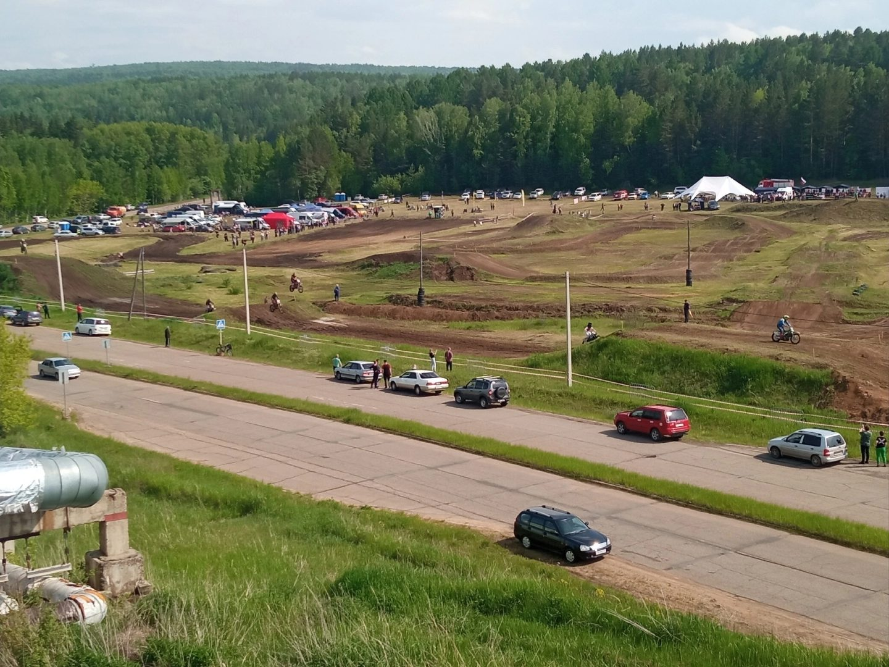
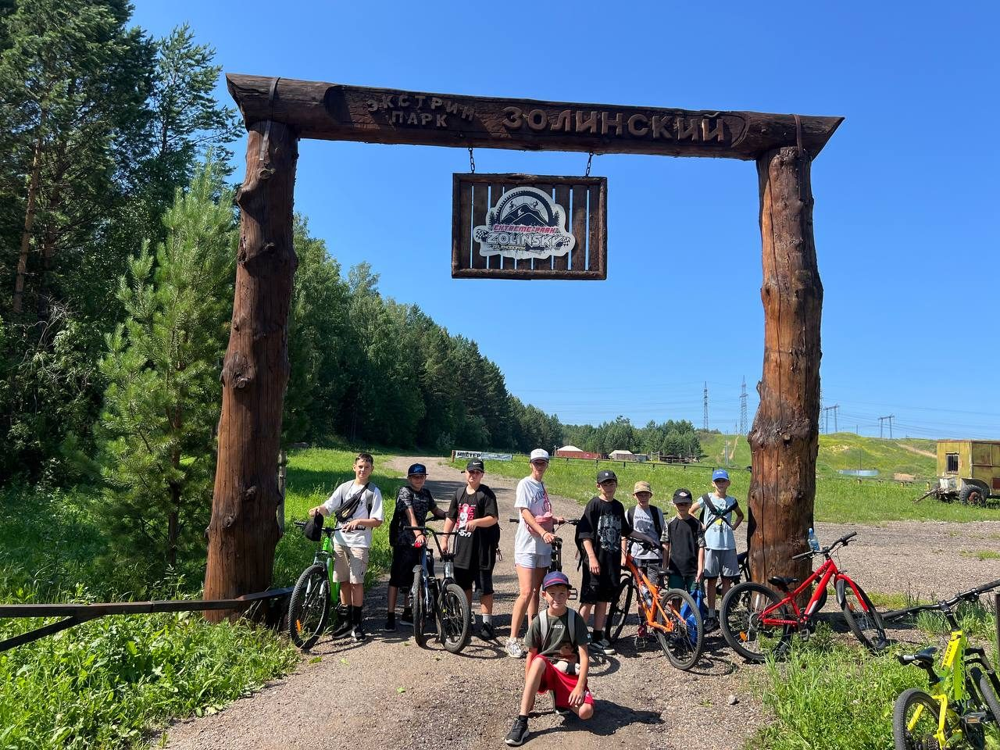
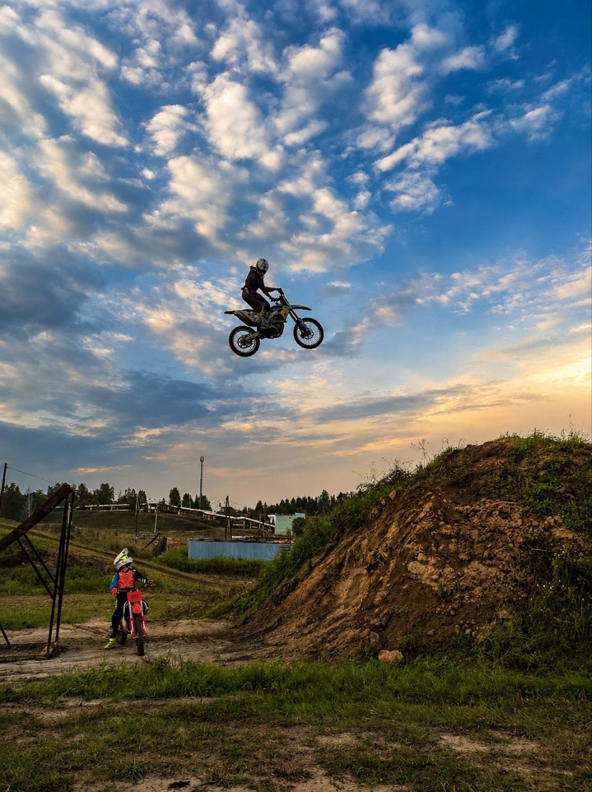
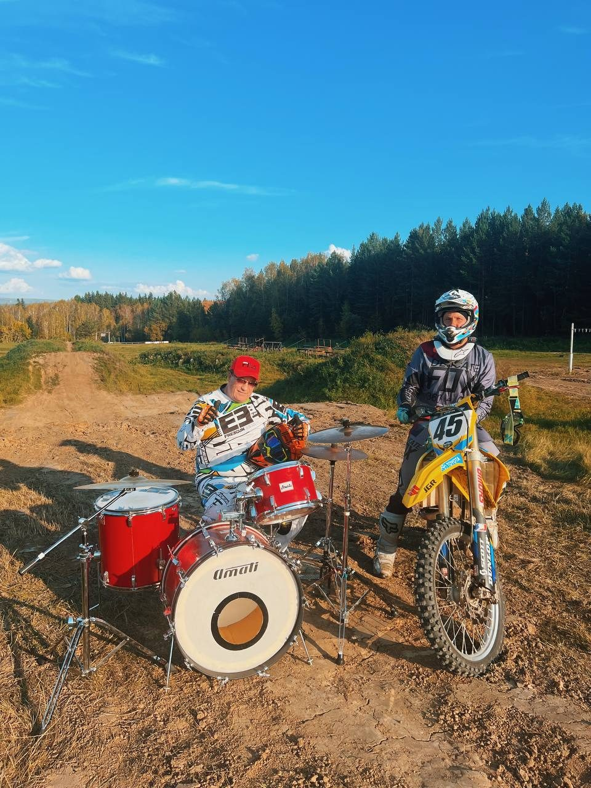
Экстрим-парк «Золинский»
Экстрим-парк на окраине Зеленогорска с трассами мотокросса. Здесь тренируются около 30 детей, а летом пройдут вводные занятия проекта «Траектория движения».
Проекты за последние 5 лет
Спортивные объекты, фестивали, тренировки, туризм и добровольчество. По каждому проекту указаны сроки и объём полученной поддержки.
Площадки, которые создали и ведут участники организации.




Экстрим-парк на окраине Зеленогорска с трассами мотокросса. Здесь тренируются около 30 детей, а летом пройдут вводные занятия проекта «Траектория движения».
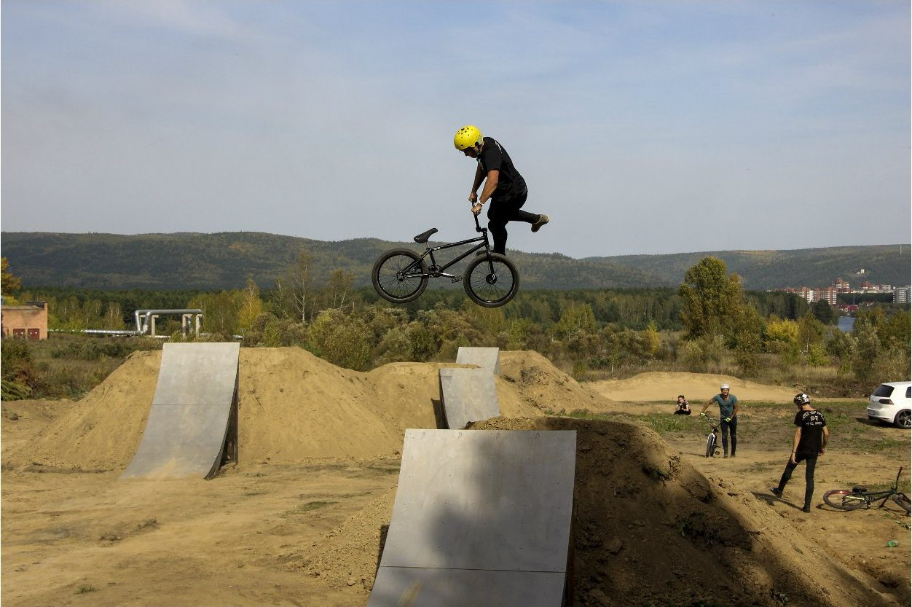
Земляные трамплины и фигуры для катания на велосипедах BMX и MTB.
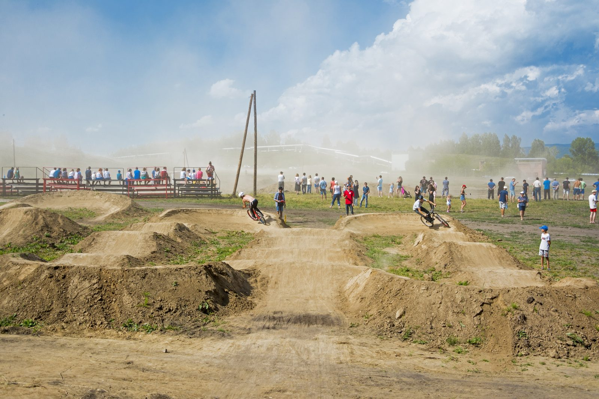
Трасса из волн и виражей, по которой катаются без педалирования: на велосипеде, самокате, скейте или роликах.
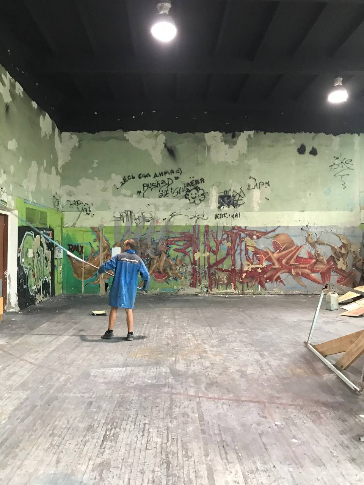
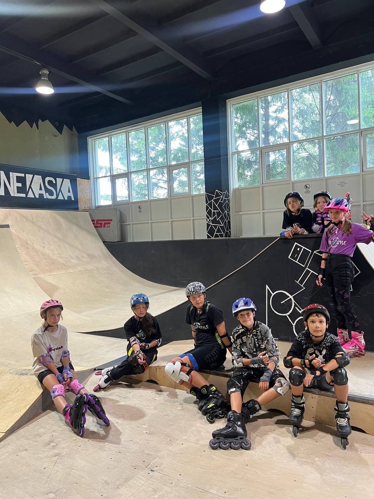
Рампы и фигуры под крышей для роликов, скейтов и самокатов. Тренировки идут круглый год, независимо от погоды.
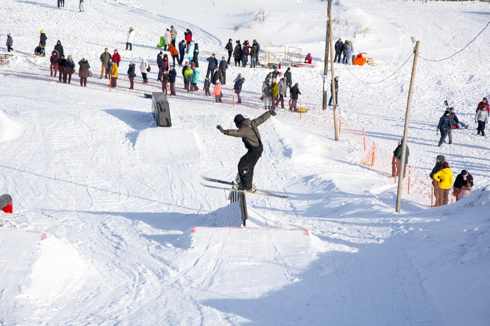
Зимние фигуры и трамплины для сноуборда и горных лыж.
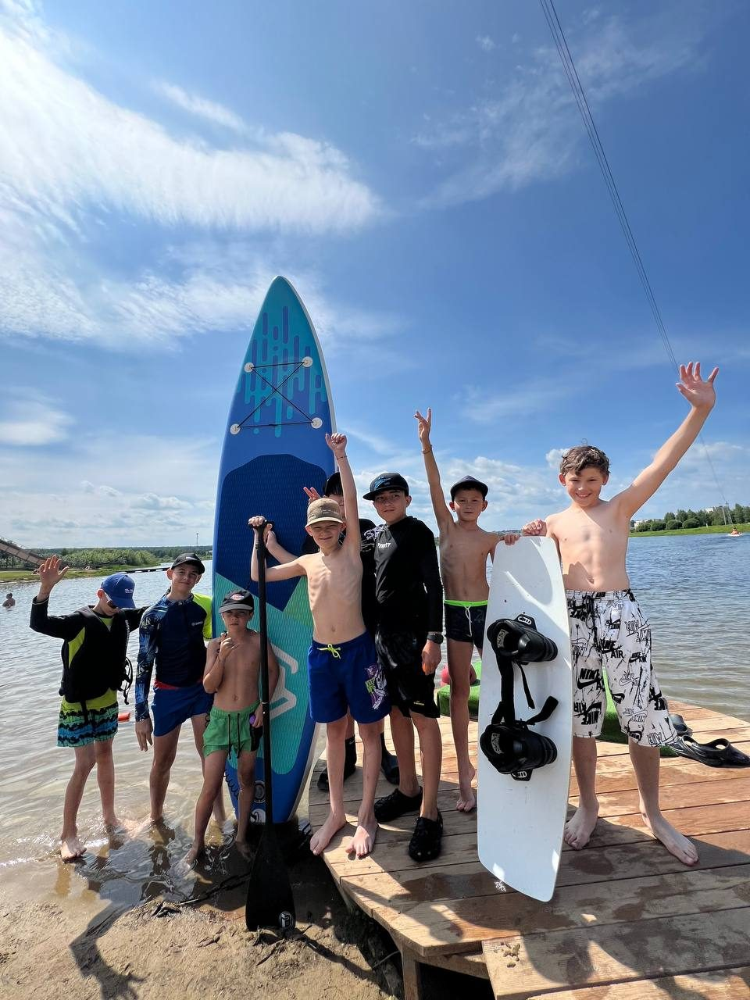
Летняя площадка на воде: катание на вейкборде и сап-бордах.
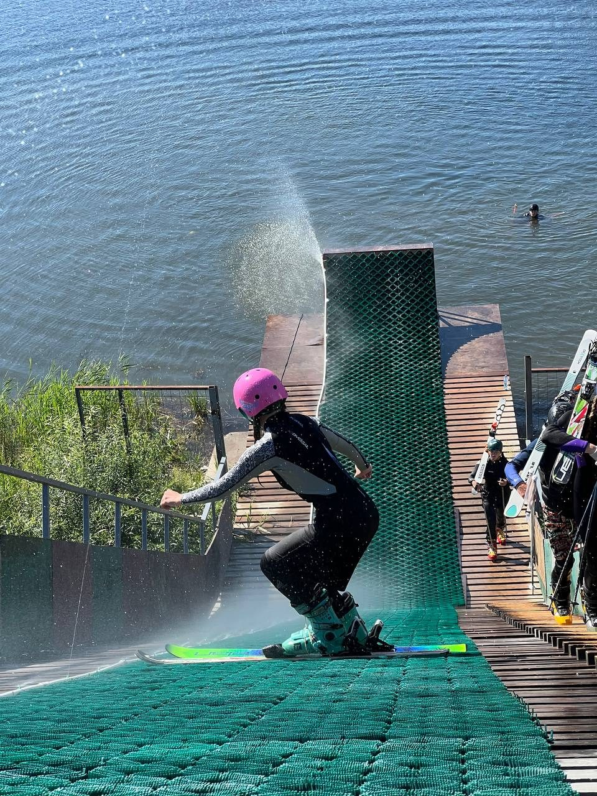
Трамплин для тренировок лыжников-фристайлистов: прыжки летом отрабатываются с приземлением в воду.
Круглогодичные бесплатные занятия мотоспортом для детей 7–17 лет Зеленогорска и Рыбинского района. Летом занятия идут на трассе «Золинского», зимой в крытом отапливаемом зале. Технику и экипировку выдаём на время занятий, с детьми работают тренеры и наставники. Для безопасной отработки прыжков приобретём наклонную страховочную подушку, рассчитанную на приземление с мотоциклом и велосипедом, с регулируемой жёсткостью.
Трёхдневный спортивно-технический фестиваль, в котором приняли участие более 200 человек. Мы расширили техническую базу, спортсмены, организаторы и волонтёры повысили мастерство, по итогам подготовлены методические рекомендации.
Фестиваль эндуро, для которого мы добавили новый элемент трассы и расширили техническую базу. Результаты обобщены в методических рекомендациях.
Программа по популяризации туризма в холодный период, с декабря по март. Участники получили условия для физического развития и оздоровления.
134 спортсмена из 6 регионов, более 2 500 зрителей, 34 волонтёра. Фестиваль популяризировал безопасный экстремальный спорт и культуру безопасного катания.
Проект по развитию добровольчества: волонтёры выполнили благоустройство городской территории.